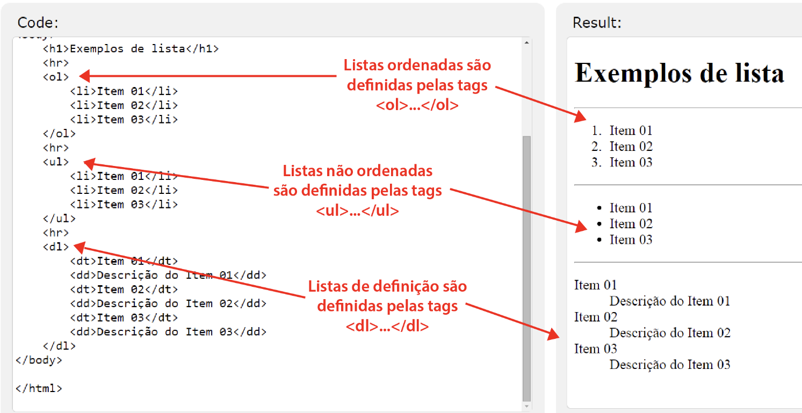
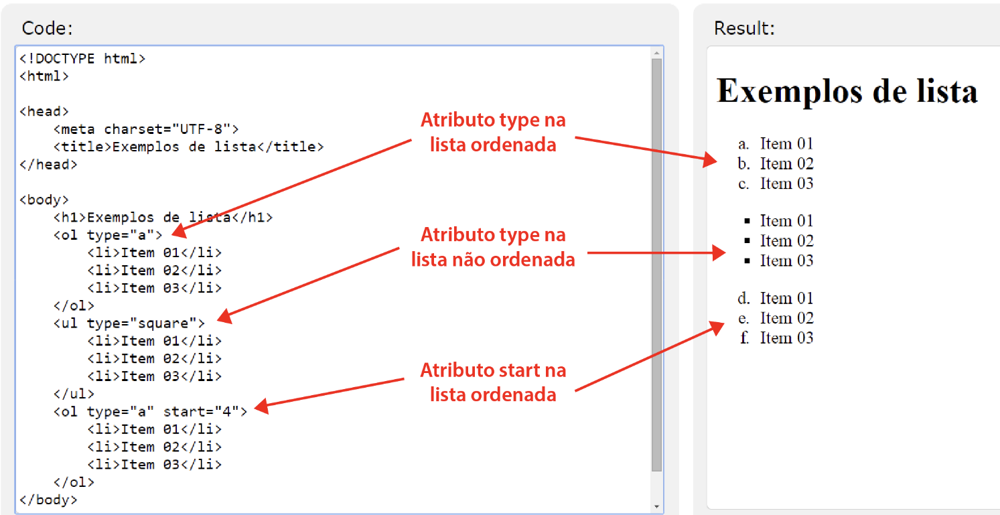

Lista Ordenadas e Não Ordenadas
Exemplos:


O que eu aprendi na aula 3:
-
Aprendi que para abrirmos uma lista, antes de qualquer coisa, é
necessário definirmos se ela será uma lista ORGANIZADA ou NÃO
ORGANIZADA. pra isso, iremos usar as seguintes tags:
ol= que será para uma lista organizada.ul= que será para
uma lista não organizada.
-
Aprendi também que é possível fazermos uma lista com ordens númericas,
com letras do alfabeto, com itens específicos e também uma lista que sem
nenhuma dessas informacoes anteriomente citadae. são as famosas: NÃO
ORGANIZADAS